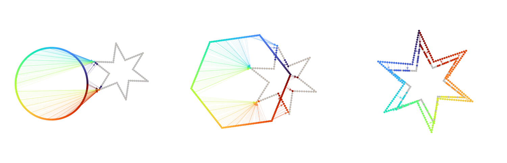
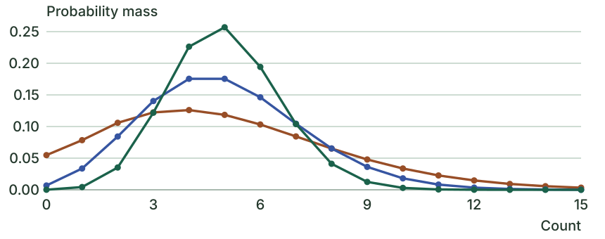

Business Intelligence Engineer Intern
I built AI agents to investigate root causes of operational issues, automating replies to thousands of internal tickets.
Lausanne, Switzerland
MSc Statistics student at EPFL with a focus on data science, machine learning, and software engineering.
I built AI agents to investigate root causes of operational issues, automating replies to thousands of internal tickets.
I wrote C++ software for industrial X-ray CT and 3D log scanners, working on computer vision and cutting-pattern optimization algorithms, networked optimizer synchronization, and edge-case handling in a large production codebase.

EPFL team project · 2026
Template-based mesh deformation in geometric deep learning and medical imaging typically relies on Chamfer distance, whose greedy nearest-neighbor matching can cause many-to-one vertex collapse. As a 2D proof of concept for 3D mesh deformation, we trained a neural feature extractor with REINFORCE to output a probability distribution over vertex correspondences, using final fit quality after regularized gradient-descent deformation as the reward. Trained on parallel batches of procedurally generated shapes under random rotations, translations, and anisotropic scaling, the learned policy avoided nearest-neighbor collapse and outperformed standard Chamfer deformation.

Bachelor's thesis · Statistical modeling
I derived a count distribution with full dispersion flexibility for under- and over-dispersed data, and implemented its probability functions, sampling, and maximum-likelihood regression in R. Unlike continuous distributions, decoupling variance from the mean in count models is non-trivial: integer support prevents simple rescaling and imposes a sharp variance lower bound of f(1 − f), where f = μ − ⌊μ⌋ is the fractional part of the mean μ. As θ → 0, the distribution reaches this exact bound.
dgdpois(0:18, lambda = 5, theta = 0.25)
A single generalized Poisson family covers the full dispersion range for any positive mean (shown here at λ = 5 for θ = 0.45, θ = 1, and θ = 2.2).

Standard textbook models, written by hand without high-level wrappers so I would not treat backpropagation or self-attention as black boxes.
Built the forward pass, loss, and backward pass directly to trace how gradients flow and weights update across layers.
View on GitHubImplemented tokenization, positional embeddings, and masked self-attention from basic tensor operations, trained on Dante's Divina Commedia.
View on GitHub